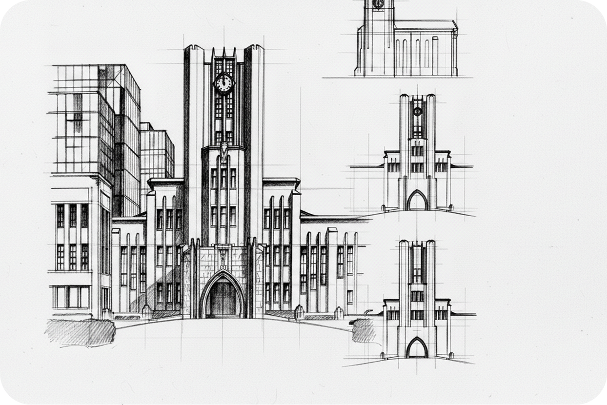
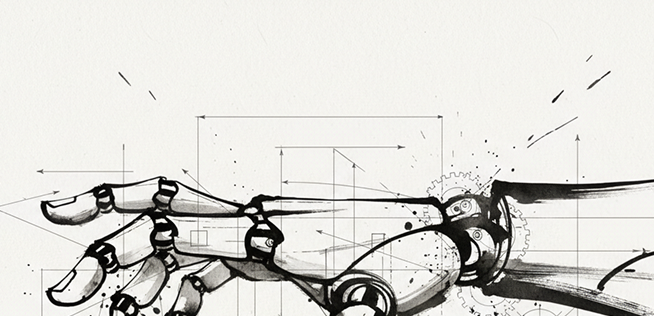
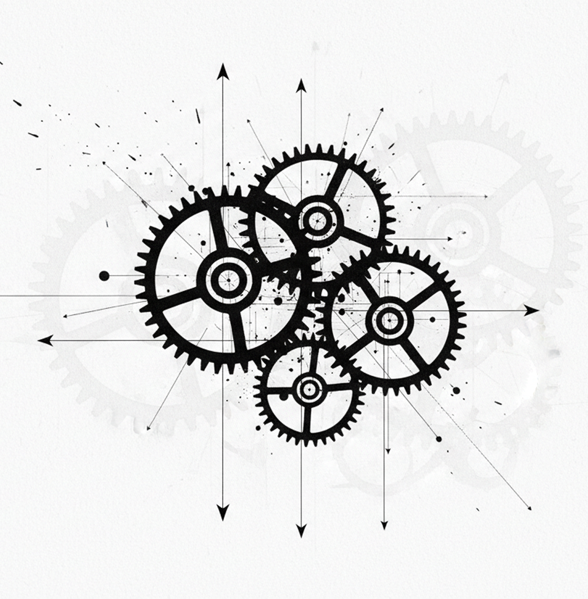
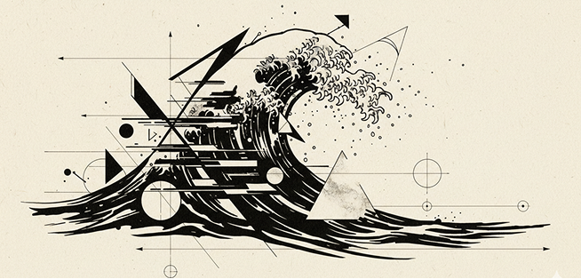

01. The Philosophy of Advanced Autonomy
TIARは単なるエンジニアリングハブではありません。次世代の知覚システムの揺りかごです。ロボティクスは21世紀の書道であり、技術的な規律と創造的な流れの完璧なバランスであると信じています。東京の中心部に設立されたTIARは、ヒューマノイドとAIの融合における世界の競争をリードしています。

TIARは単なるエンジニアリングハブではありません。次世代の知覚システムの揺りかごです。ロボティクスは21世紀の書道であり、技術的な規律と創造的な流れの完璧なバランスであると信じています。東京の中心部に設立されたTIARは、ヒューマノイドとAIの融合における世界の競争をリードしています。
私たちの研究所は可能性の限界に挑戦しています。能楽師の優雅さを模倣したバイオメカニカルな手足から、禅の論理に着想を得たニューラルネットワークまで、私たちは「機械」の意味を再定義します。私たちが書くコードの一行一行は、未来というキャンバスにインクで描いた一筆なのです。
人工的な触感と人間の直感が融合。カリグラフィーの精密さにインスパイアされた触覚システム。

自律の建築。古代幾何学と量子フローの垂直統合。

動きを再定義。伝統的な墨絵の流れと空気力学的な精密さが融合。
